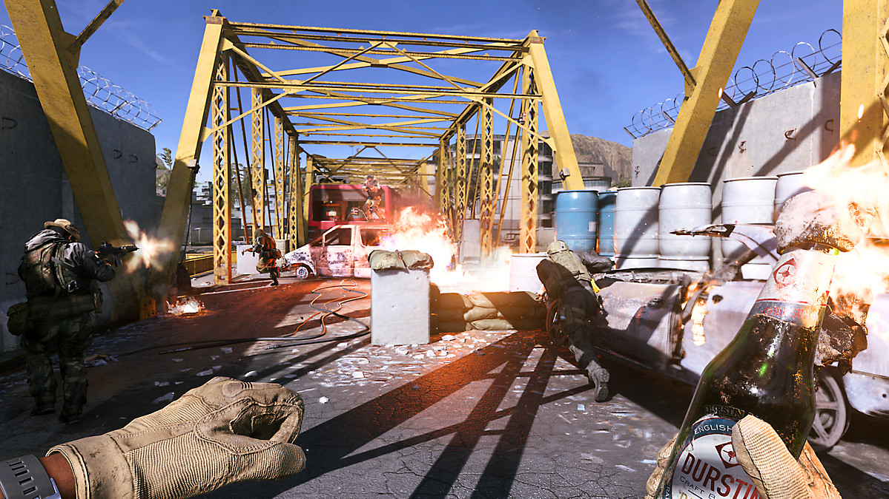
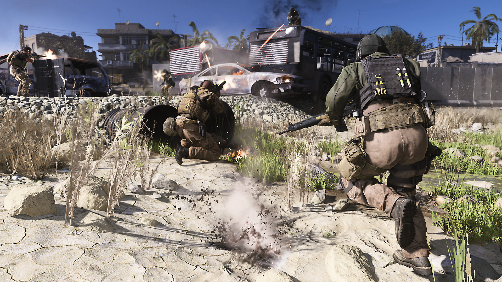

This huge map is playable in 10vs10 domination, it's a really fun map to play exepted when you'r getting spawnkilled the whole game. You should play with a sniper or an assault rifle because of the long range you can find here.
 